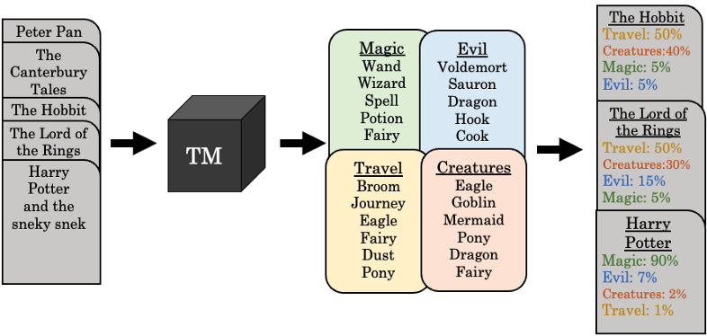
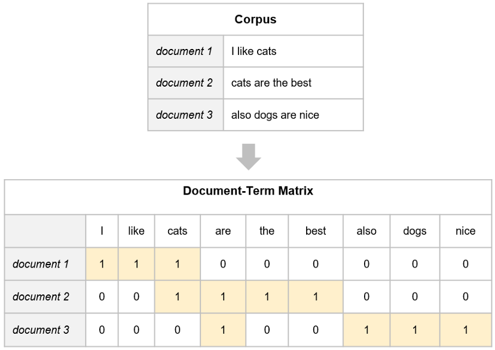
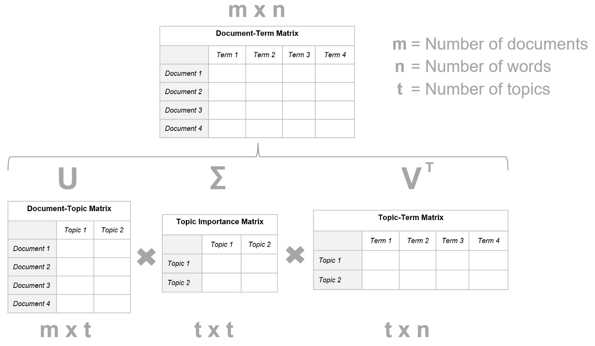
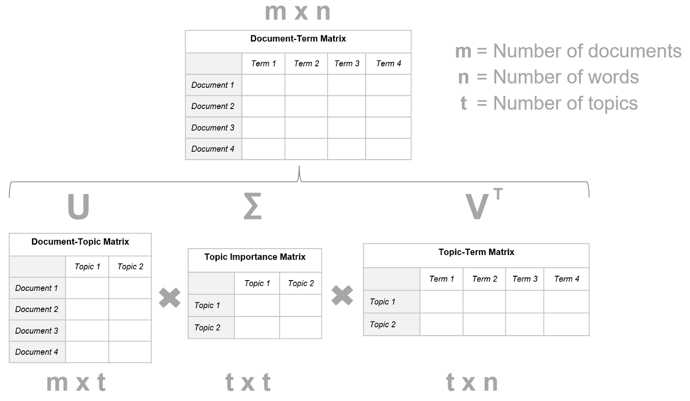
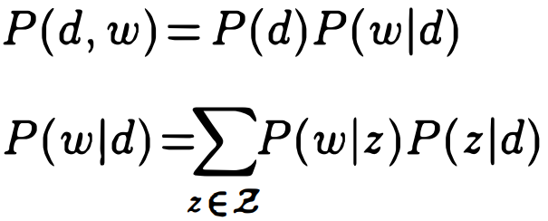
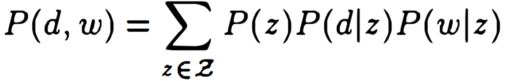
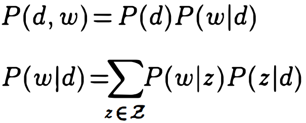
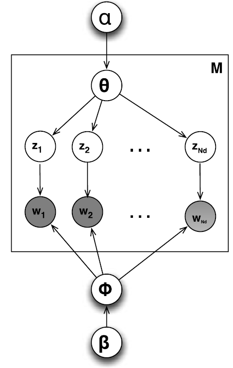
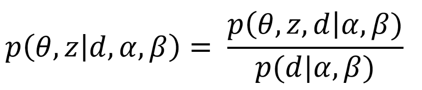
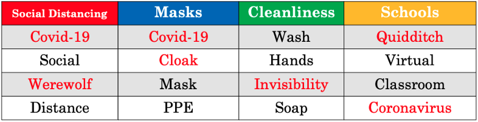

100 NLP, Topic
TOC
- Misc
- Algorithms
- Latent Semantic Analysis (LSA)
- probabilistic Latent Semantic Analysis (pLSA)
- Latent Dirichlet Allocation (LDA)
- Non-negative Matrix Factorization (NMF)
- BERTopic and Top2Vec
- Topic-Noise Models
Misc
- Unsupervised Machine Learning problem
- Takes a set of documents (far left), and returns a set of k topics (middle, e.g. Magic, Evil, Travel, Creatures) that summarize the documents (far right)
- “Wand” has the highest probability in the Magic topic
- Topic probablilities can be used to classify documents
- Topics don’t come with titles like are shown in figure. Researchers need to determine these topic categories on their own
- Example: 2020 Election Tweets
.png)
.png)
- Each row is a topic
- Topics could be: Gun Violence (row 1), Political Parties (row 2), a general Twitter topic (row 3), Covid-19 (row 4), Pro-Biden Phrases and Hashtags (row 5), Democratic Voters (row 6), and Pro-Trump Phrases and Hashtags (row 7)
- Example: 2020 Election Tweets
- Takes a set of documents (far left), and returns a set of k topics (middle, e.g. Magic, Evil, Travel, Creatures) that summarize the documents (far right)
- Use Cases
- Annotation - ‘automatically’ label, or annotate, unstructured text documents based on the major themes that run through them
- With labels, supervised ML models can now be used
- eDiscovery - Legal discovery involves searching through all the documents relevant for a legal matter, and in some cases the volume of documents to be searched is very large. A 100% search of the documents isn’t always viable, so it’s easy to miss out on relevant facts. (article)
- Content recommendation - The NYT uses topic modeling in two ways—firstly to identify topics in articles and secondly to identify topic preferences amongst readers. The two are then compared to find the best match for a reader.
- Annotation - ‘automatically’ label, or annotate, unstructured text documents based on the major themes that run through them
- Incoherent topics in this context means difficult for humans to interpret
Algorithms
- Misc
- Notes from
- Topic Modeling with LSA, pLSA, LDA, NMF, BERTopic, Top2Vec: a Comparison
- At the end of the article
- Table that compares algorithms on a number of categories (too large to put in this note)
- Great discussion on topic representation: human vs model
- Use Cases
- Find trending topics in Tweets with little pre-processing effort –> BERTopic/Top2Vec better
- Finding how a given document may contain a mixture of multiple topics –> LDA/NMF better
- See BERTopic/Top2Vec >> Cons >> Single Topic for potential hack though
- At the end of the article
- Topic Modeling with LSA, pLSA, LDA, NMF, BERTopic, Top2Vec: a Comparison
- Latent Semantic Analysis (LSA) (Deerwester¹ et al. 1990), probabilistic Latent Semantic Analysis (pLSA) (Hofmann², 1999), Latent Dirichlet Allocation (LDA) (Blei³ et al., 2003) and Non-Negative Matrix Factorization (Lee³ et al., 1999)
- Represent a document as a bag-of-words and assume that each document is a mixture of latent topics
- Document-Term Matrix (DTM) aka Term-Document Matrix (TDM) created
- Each cell (i, j) contains a count, i.e. how many times the word j appears in document i
- Notes from
- Latent Semantic Analysis (LSA)
- Description
- Topics corresponding to largest singular values from SVD are used to summarize the corpus
- Process
- Truncated SVD applied to the Document-Term Matrix (DTM) (See above) 
- Decomposed into the product of three distinct matrices: DTM = U ∙ Σ ∙ Vᵗ
- U and V are of size m x m and n x n respectively
- m the number of documents in the corpus
- n the number of words in the corpus.
- Σ (Topic Importance) is m x n and only its main diagonal is populated: it contains the singular values of the DTM.
- U and V are of size m x m and n x n respectively
- Decomposed into the product of three distinct matrices: DTM = U ∙ Σ ∙ Vᵗ
- Truncated SVD applied to the Document-Term Matrix (DTM) (See above) 
- Results
- First t largest singular values selected from Σ
- t ≤ min(m, n)
- The topics that correspond to the selected singular values are considered representative of the corpus
- Topics are open to human interpretation through the V matrix
- First t largest singular values selected from Σ
- Issues
- The DTM disregards the semantic representation of words in a corpus. Similar concepts are treated as different matrix elements. Pre-processing techniques may help, but only to some extent. For example, stemming may help in treating “Italy” and “Italian” as similar terms (as they should be), but close words with a different stem like “money” and “cash” would still be considered as different. Moreover, stemming may also lead to less interpretable topics.
- LSA requires an extensive pre-processing phase to obtain a significant representation from the textual input data.
- The number of singular values t (topics) to maintain in the truncated SVD must be known a priori.
- A property of SVD is that the basis vectors are orthogonal to each other, forcing some elements in the bases to be negative. Therefore, U and V may contain negative values. This poses a problem for interpretability. We don’t know how a component contributes to the whole.
- Description
- probabilistic Latent Semantic Analysis (pLSA)
- Models the joint probability P(d, w) of seeing a word, w, and a document, d, together as a mixture of conditionally independent multinomial distributions
- w indicates a word.
- d indicates a document.
- z indicates a topic.
- P(z|d) is the probability of topic z being present in a document d.
- P(w|z) is the probability of word w being present in a topic z.
- We assume P(w|z, d) = P(w|z).
- Model equations (above) equivalent to (See LSA algorithm above)
- P(d, w) corresponds to the DTM.
- P(z) is analogous for the main diagonal of Σ.
- P(d|z) and P(w|z) correspond to U and V, respectively.
- Model can be fit using the expectation-maximization algorithm (EM)
- EM performs maximum likelihood estimation in the presence of latent variables (in this case, the topics)
- Issues
- The number of parameters grows linearly with the number of documents, leading to problems with scalability and overfitting.
- It cannot assign probabilities to new documents.
- Models the joint probability P(d, w) of seeing a word, w, and a document, d, together as a mixture of conditionally independent multinomial distributions
- Latent Dirichlet Allocation (LDA)
- Uses Dirichlet priors to estimate the document-topic and term-topic distributions in a Bayesian approach
- Model (Plate Notation)
- α - the parameter of the Dirichlet prior on the per-document topic distributions
- θ - topic distribution for a document
- z - topic, w - word
- Subscripts
- M - indicates the number of documents
- N - the number of words in a document
- d - document
- Top to Bottom
- From the Dirichlet distribution with parameter α, we draw a random sample representing the topic distribution θ for a document/article/corpus.
- Example: topic distribution for an article the politics section of a newspaper
- a mixture (0.99 politics, 0.05 sports, 0.05 arts) describing the distribution of topics for an article
- Example: topic distribution for an article the politics section of a newspaper
- From the selected mixture θ, we draw a topic zi based on the distribution (in our example, politics).
- From the Dirichlet distribution with parameter α, we draw a random sample representing the topic distribution θ for a document/article/corpus.
- Bottom to Top
- From the Dirichlet distribution with parameter 𝛽, we draw a random sample representing the word distribution φ for the per-topic word distribution given the topic zi.
- From selected mixture φ, we draw a word wi based on the distribution.
- Process
- Estimate the probability of a topic z given a document d and the parameters α and 𝛽, i.e. P(z|d, α, 𝛽)
- Find parameters by minimizing the Kullback-Leibler divergence between the approximate distribution and the true posterior P(θ, z|d, α, 𝛽)
- Compute P(z|d, α, 𝛽), which, in a sense, corresponds to the document-topic matrix U. Each entry of 𝛽₁, 𝛽₂, …, 𝛽ₜ is p(w|z), which corresponds to the term-topic matrix V
- U and V are matrices from SVD in the LSA section. See above for details
- Estimate the probability of a topic z given a document d and the parameters α and 𝛽, i.e. P(z|d, α, 𝛽)
- Pros:
- It provides better performances than LSA and pLSA.
- Unlike pLSA, LDA can assign a probability to a new document thanks to the document-topic Dirichlet distribution.
- It can be applied to both short and long documents.
- Topics are open to human interpretation.
- As a probabilistic module, LDA can be embedded in more complex models or extended. Cons:
- The number of topics must be known beforehand.
- The bag-of-words approach disregards the semantic representation of words in a corpus, similarly to LSA and pLSA.
- The estimation of Bayes parameters α and 𝛽 lies under the assumption of exchangeability for the documents.
- It requires an extensive pre-processing phase to obtain a significant representation from the textual input data.
- Studies report LDA may yield too general (Rizvi et al., 2019) or irrelevant (Alnusyan et al., 2020) topics. Results may also be inconsistent across different executions (Egger et al., 2021).
- Non-negative Matrix Factorization (NMF)
- NMF is the same as SVD used in LSA except that it applies the additional constraints that U and Vᵗ can only contain non-negative elements.
- Decomposition has no sigma matrix, just U ∙ Vᵗ
- Misc
- Also see
- Algorithms, Recommendation >> Collaboritive Filtering >> Non-negative Matrix Factorization (NMF)
- deep dive into the algorithm, packages, example, etc.
- Algorithms, Recommendation >> Collaboritive Filtering >> Non-negative Matrix Factorization (NMF)
- Also see
- Optimize problem by minimizing the difference between the DTM and its approximation.
- Frequently adopted distance measures are the Frobenius norm and the Kullback-Leibler divergence
- Pros:
- Literature argues the superiority of NMF compared to SVD (hence LSA) in producing more interpretable and coherent topics (Lee et al. 1999, Xu et al. 2003; Casalino et al. 2016).
- Cons:
- The non-negativity constraints make the decomposition more difficult and may lead to inaccurate topics.
- NMF is a non-convex problem. Different U and Vᵗ may approximate the DTM, leading to potentially inconsistent outcomes for different runs.
- NMF is the same as SVD used in LSA except that it applies the additional constraints that U and Vᵗ can only contain non-negative elements.
- BERTopic and Top2Vec
- Creates semantic embeddings from input documents
- BERTopic
- Used BERT Sentence Transformers (SBERT) to manufacture high-quality, contextual word and sentence vector representations.
- Currently has a broader coverage of embedding models (Oct 2022)
.png)
- Top2Vec
- Used Doc2Vec to create jointly embedded word, document, and topic vectors.
- Clustering the Embeddings
- Both original papers used HDBSCAN
- BERTopic supports K-Means and agglomerative clustering algorithms
- K-Means allows to select the desired number of clusters and forces every document into a cluster. This avoids the generation of outliers, but may also result in poorer topic representation and coherence.
- Topic Representation
- BERTopic - concatenates all documents within the same cluster (topic) and applies a modified TF-IDF (class-based TF-IDF or cTF-IDF)
- The “modification” is that documents are replaced with clusters in the original TF-IDF formula
- cTF-IDF estimates the importance of words in clusters instead of documents.
- Top2Vec - manufactures a representation with the words closest to the cluster’s centroid
- For each dense area obtained through HDBSCAN, it calculates the centroid of document vectors in original dimension, then selects the most proximal word vectors
- BERTopic - concatenates all documents within the same cluster (topic) and applies a modified TF-IDF (class-based TF-IDF or cTF-IDF)
- Pros
- The number of topics is not necessarily given beforehand.
- Both BERTopic and Top2Vec support for hierarchical topic reduction to optimize the number of topics.
- High-quality embeddings take into account the semantic relationship between words in a corpus, unlike the bag-of-words approach. This leads to better and more informative topics.
- Due to the semantic nature of embeddings, textual pre-processing (stemming, lemmization, stopwords removal, …) is not needed in most cases.
- BERTopic supports dynamic topic modeling.
- Modularity. Each step (document embedding, dimensionality reduction, clustering) is virtually self-consistent and can change or evolve depending on the advancements in the field, the peculiarities of a specific project or technical constraints.
- example: use BERTopic with Doc2Vec embeddings instead of SBERT, or apply K-Means clustering instead of HDBSCAN.
- They scale better with larger corpora compared with conventional approaches.
- Both BERTopic and Top2Vec provide advanced built-in search and visualization capabilities. They make simpler to investigate the quality of the topics and drive further optimization, as well as producing high-quality charts for presentations.
- The number of topics is not necessarily given beforehand.
- Cons
- They work better on shorter text, such as social media posts or news headlines.
- Most transformers-based embeddings have a limit on the number of tokens they can consider when they build a semantic representation. It is possible to use these algorithms with longer documents. One may, for example, split the documents in sentences or paragraphs before the embedding step. Nevertheless, this may not necessarily benefit the generation of meaningful and representative topics for longer documents.
- Each document is assigned to one topic only.
- Traditional approaches like LDA, instead, were built on the assumption that each document contains a mixture of topics.
- The probability distribution of the HDBSCAN may be used as proxy of the topics distribution
- They are slower compared to conventional models (Grootendorst, 2022).
- Faster training and inference may require more expensive hardware accelerators (GPU).
- Although BERTopic leverages transformers-based large language models to manufacture document embeddings, the topic representation still uses a bag-of-word approach (c TF-IDF).
- They may be less effective for small datasets (<1000 docs) (Egger et al., 2022).
- They work better on shorter text, such as social media posts or news headlines.
- Topic-Noise Models
- Notes from
- Generate more coherent, interpretable topics than traditional topic models when using text from noisy domains like social media
- topic models are pretty good at identifying topics in traditional documents like books, newspaper articles, and research papers, because they have less noise
- Example: Domain = Covid-19 pandemic
- Uses a fake dataset with Harry Potter characters tweeting about the pandemic
- Red words are noise.
- Variations of “Covid” are repeated in each topic
- Potter words not relevant to the domain
- *Recommended to ensemble these models with traditional topic models to produce the best results
- TND topics are not always as intuitive as those generated using other topics models
- Misc
- {{gdtm}}
- It is not unusual with noisy data that the model focuses on unigrams due to the issue of sparsity in short documents. Two word phrases tend to appear less frequently in a document collection than single words. That means that when you have a topic model with unigrams and ngrams, the ngrams will naturally not rise to the top of the topic word list
- Because social media documents are much shorter than traditional texts, they rarely contain all of the topics in the topic set
- Best results on data sets of tens or hundreds of thousands of tweets or other social media posts
- The training of the noise distribution is accomplished using a randomized algorithm. With smaller data sets, TND is not always able to get an accurate noise distribution
- Topic-Noise Discriminator (TND)
- Jointly approximates the topic and noise distributions on a data set to allow for more accurate noise removal and more coherent topics
- Original topic-noise model (Churchill and Singh, 2021)
- Has been empirically shown that TND works best when combined with more traditional topic models
- assigns each word in each document to either a topic or noise distribution, based on the word’s prior probability of being in each distribution
- Process:
- For each document d in D:
- Probabilistically choose a topic zᵢ from the topic distribution of d
- For each word w in d, assign w to zᵢ or the noise distribution H, based on the probabilities of w in zᵢ and H.
- Re-approximate the topic distribution of d given the new topic-word assignments
- Repeat the above for X iterations (usually 500 or 1,000 in practice)
- Over a large number of iterations, each word will have a probability of being a topic word and a probability of being a noise word.
- For each document d in D:
- Hyperparameters:
- k - the number of topics in the topic set
- α - how many topics there are per document
- β₀ - how many topics a word can be in
- β₁ - the skew of a word towards a topic (and away from the noise distribution)
- high β₁ → the more likely any given word will be a topic word instead of a noise word
- Like placing an extra weight on the Topic Frequency side of the scales
- Recommendations for domain-specific social media data:
- k ≥ 20
- Twitter: k = 30
- 9 ≤ β₁ ≤ 25.
- Twitter: β₁ = 25
- Reddit: β₁ = 9 or 16 or 16 for Reddit comments.
- Increase when data sets are noisier to try to keep more words in topics that truly belong there.
- k ≥ 20
- Noiseless Latent Dirichlet Allocation (NLDA)
- TND provides accurate noise removal while maintaining the same topic quality and performance that people expect from state-of-the-art topic models used on more traditional document collections.
- Ensemble of TND model and a LDA model
- the noise distribution of TND and the topic distribution of LDA are combined to create more coherent, interpretable topics than we would get with either TND or LDA alone
- A scaling parameter φ allows the noise and topic distributions to be compared even if they are not generated using the same number of topics, k, by scaling the underlying frequencies to relatable values.